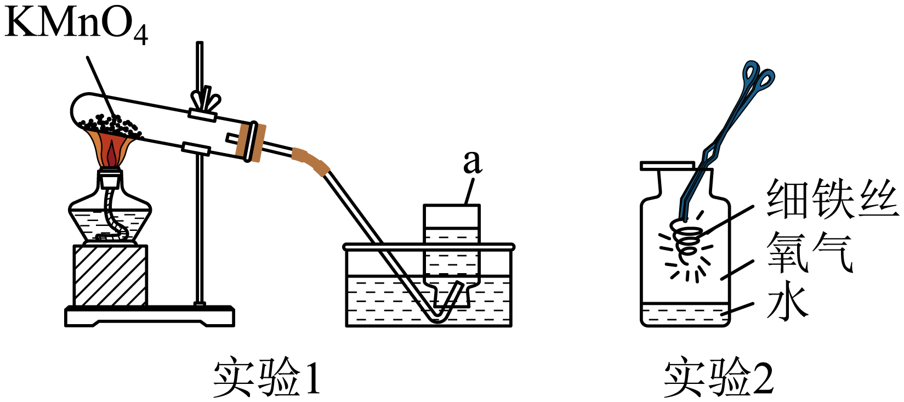
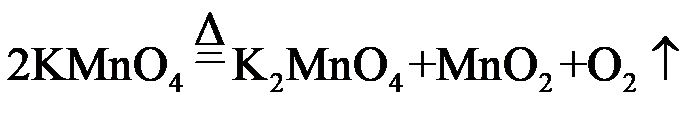

2023年北京中考化学 第32题 解析
32. 下图是 的制取和性质实验。
的制取和性质实验。

（1）实验1，仪器a的名称是_____，制取的化学方程式为_____。
（2）实验2，观察到铁丝剧烈燃烧、_____、生成黑色固体。
【答案】（1） ① 集气瓶 ②.
集气瓶 ②.

（2）火星四射【解析】
【小问1详解】
由图可知，仪器a为集气瓶；
制取氧气的反应为高锰酸钾受热分解生成锰酸钾、二氧化锰和氧气，该反应的化学方程式为：；
【小问2详解】
实验2中铁丝在氧气中剧烈燃烧、火星四射、生成黑色固体。